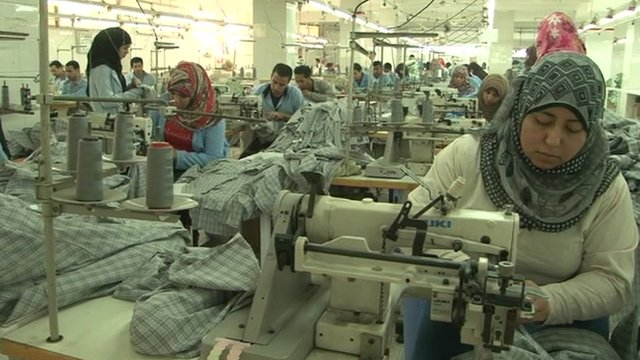

Egypt
Egypt has one of the highest combined levels of labor rights violations and poverty rates. Almost 70% of its population falls below the global poverty line, and Egypt also has the 2nd highest labor rights index score in the world.
High levels of poverty and labor rights violations are, in part, associated with restrictions on individual rights as a whole following the 2011 Egyptian Revolution, including restrictions on government criticism and unauthorized protests banned. These restrictions include labor unions, which are not allowed to organize or strike. Further limitations on collective bargaining mean that workers often do not an opportunity to express the issues they face in the workplace, preventing major workplace reform. In fact, some workers have been punished for speaking up about labor rights issues, leading to 8,041 cases of labor rights violations, including arbitrary dismissal, forced resignation, and in some cases even arrests, according to the Center for Trade Union and Workers Services, an Egyptian non-governmental organization. Low wages and unsafe working conditions, in spite of claiming lives and contributing to high levels of working poverty, also continue to go unaddressed.
Egypt’s economic trajectory also has contributed to high rates of unemployment for youth and women, according to the World Bank. The Egyptian government has dedicated investment to major projects in sectors like the hotel and automobile industries but not sectors which may promote worker well-being, longer-term economic growth, and youth/women’s employment such as health services, education, and housing by improving working conditions.
Egypt shows how labor rights and working poverty rates are fundamentally tied: without addressing labor rights, Egypt has struggled to improve poverty rates. Without improving poverty rates, however, Egypt cannot develop sectors which might improve labor rights by improving worker safety, for instance. Government intervention is instrumental in breaking this cycle, but the failure of the Egyptian government to work with laborers on addressing working poverty, facilitating economic development, and improving working conditions has led to consistently high rates of poverty and labor rights violations in spite of Egypt’s growing economy.